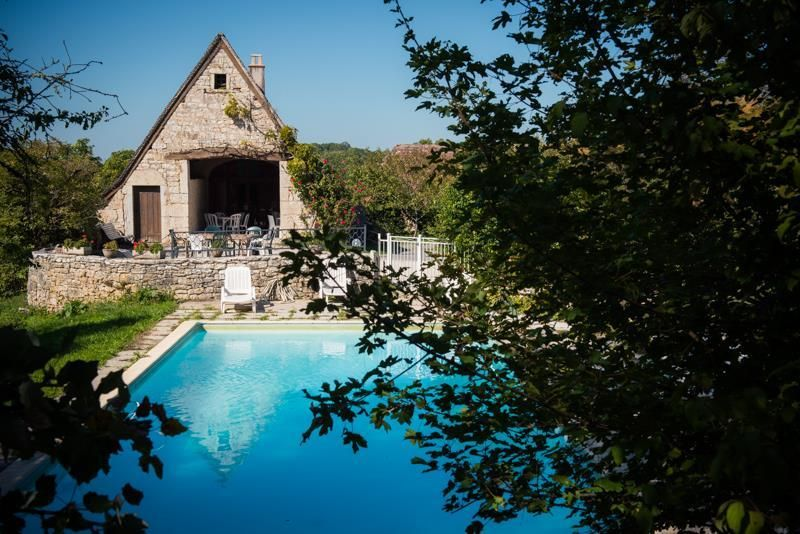
Gîte de caractère · Causses du Quercy
Lou Paradou
Une belle grange ancienne, totalement indépendante, au cœur du Causse : de vastes espaces intérieurs sous charpente apparente, une piscine et un tennis privés, pour se retrouver en famille ou entre amis.
- 9chambres sur 3 niveaux
- 17personnes
- 310 m²de grange rénovée
- 1850année de construction
La grange
Un retour aux vraies valeurs de la nature
Françoise et Jean-Paul Sindou vous accueillent dans un gîte de caractère en pleine campagne, en limite d'un hameau du Causse.
Le bâtiment, de 310 m², a été construit en 1850 et rénové en 1992. L'hébergement, de grand confort, se déploie sur trois niveaux : vastes espaces clairs, pierre apparente, charpente en bois. Dehors, un grand terrain non clos et des équipements qui vous sont personnellement réservés.
Le gîte est labellisé Gîtes de France.
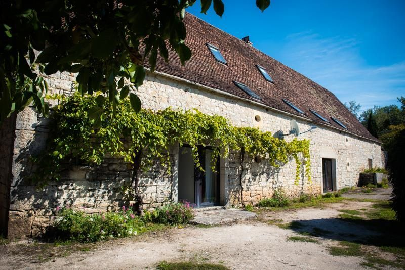
À l'intérieur
De la place pour tout le monde
Un séjour avec cheminée et coin cuisine, une grande salle de jeux, un salon télévision : des pièces pensées pour vivre ensemble.
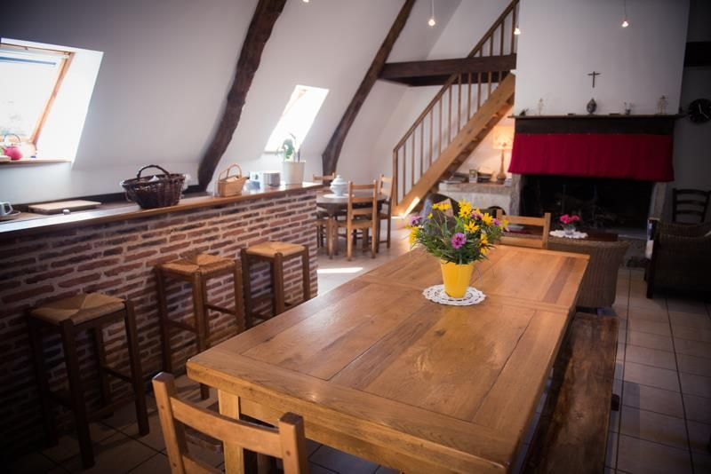
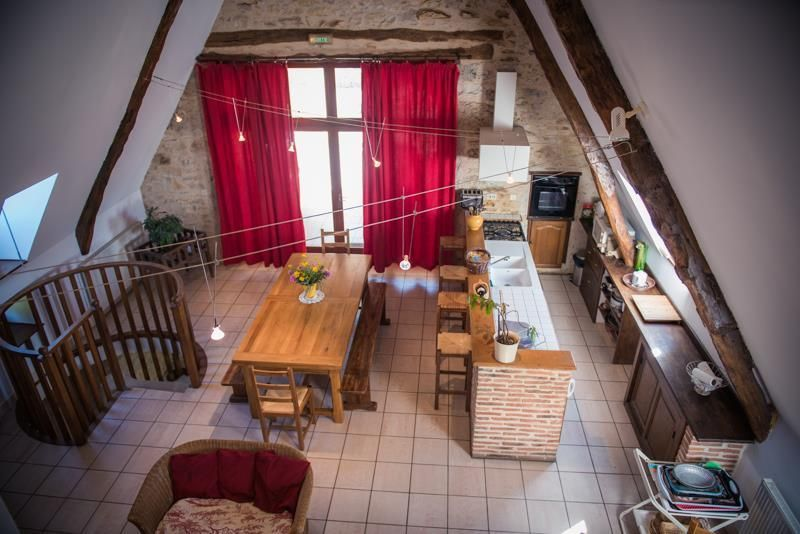
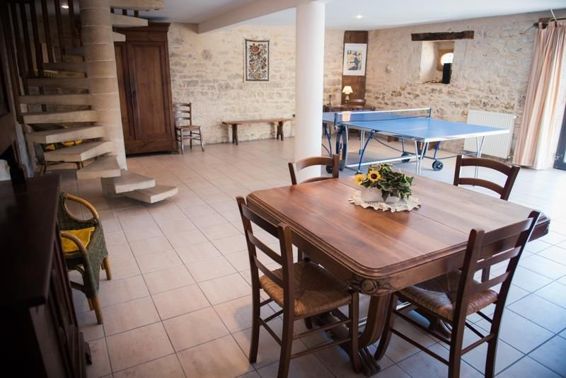
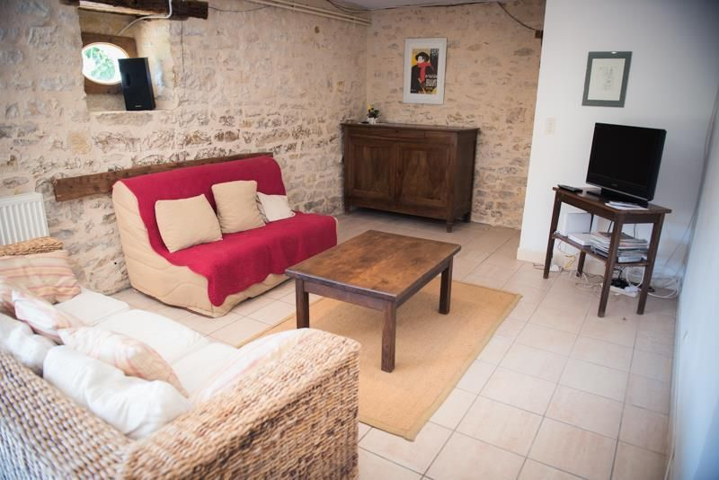
Cuisine et confort
- Lave-vaisselle, four, micro-ondes, réfrigérateur et congélateur
- Lave-linge et buanderie, fer à repasser
- Chauffage central, cheminée
- Wifi gratuit, télévision
- Chaise, lit et baignoire bébé
Pour se détendre
- Grande salle de jeux avec table de ping-pong
- Jeux de société
- Chaises longues
- Barbecue
Les chambres
Neuf chambres, toutes différentes
Réparties sur trois niveaux, dont deux avec salle d'eau privative, plus trois salles de bains et trois WC. Le linge de maison est fourni et les lits sont faits à votre arrivée.
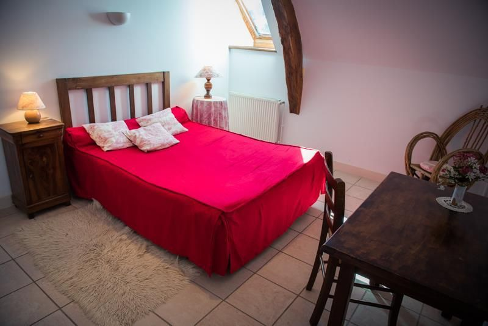
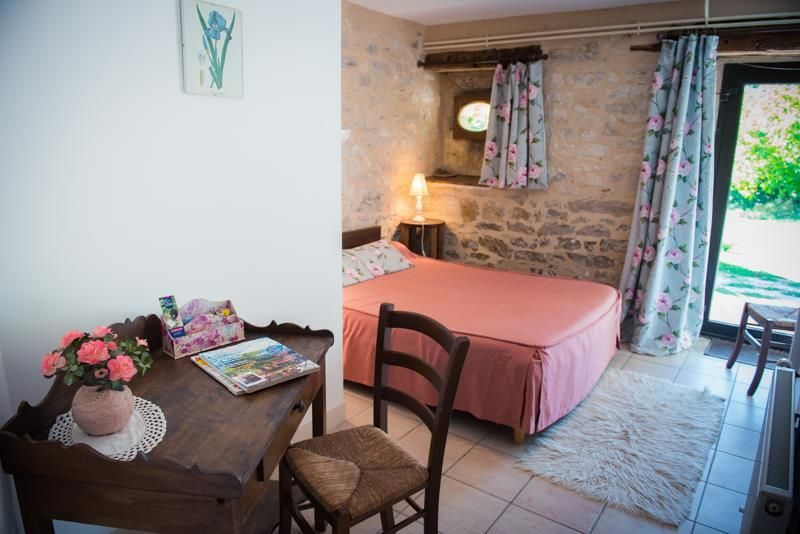
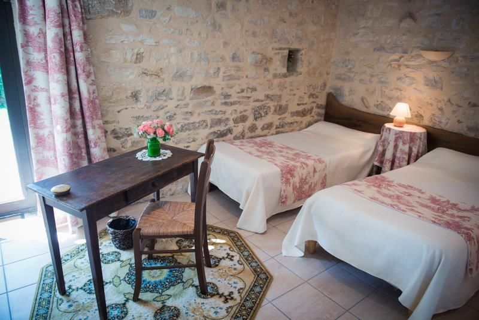
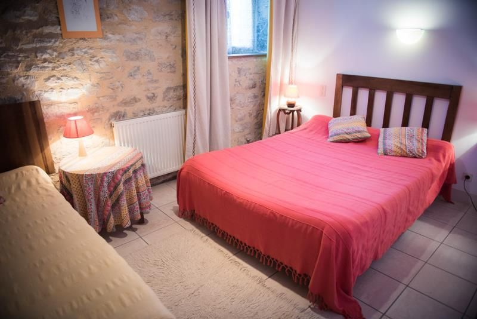
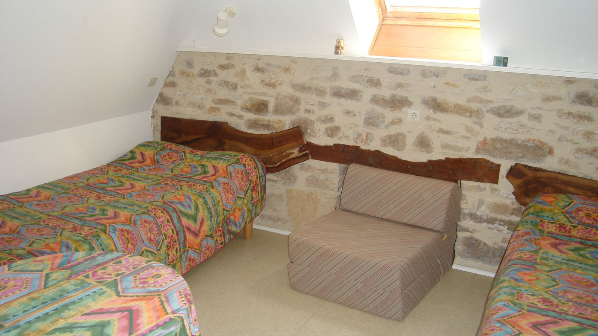
Dehors
Piscine, tennis et grand air
Un vaste terrain où chacun trouve son coin : la piscine de 12 m sur 5, le tennis privé, les jeux pour les enfants.
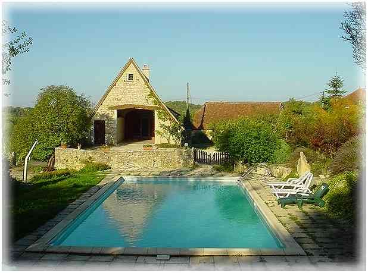
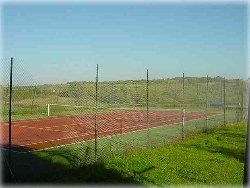
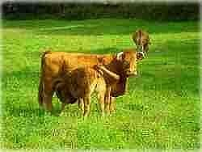
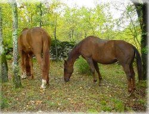
La ferme du Paradou
Un gîte sur une vraie ferme
Lou Paradou, c'est aussi un élevage naturel et en plein air de vaches de race Limousine, sur les Causses du Quercy.
Les veaux naissent tous à la ferme et sont nourris au lait de leur mère, complété par le foin et les céréales produits sur l'exploitation. La ferme propose la vente directe de viande de veau et de jeune vache : renseignez-vous lors de votre séjour.
Le Lot à votre porte
Les merveilles du Lot à une demi-heure
Au cœur du Parc naturel régional des Causses du Quercy, Lou Paradou est un point de départ idéal pour découvrir le Lot.
Venir au gîte
- Autoroute A20, sortie 56 Labastide-Murat.
- À Labastide-Murat, prendre la D17 direction Soulomès.
- Après 7 km, à la Tuilerie, tourner à droite vers Artix, puis suivre « Lou Paradou ».
Réservations
Venez séjourner au Paradou
Gîte ouvert toute l'année. Chèques bancaires et chèques vacances acceptés. On parle français et espagnol.